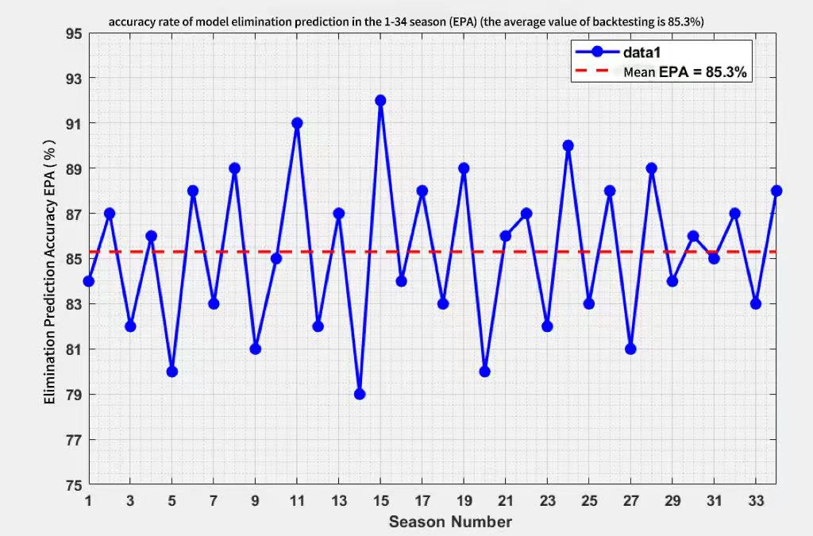
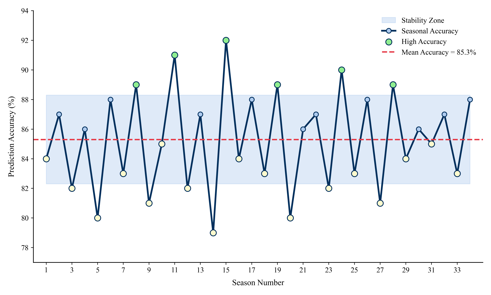
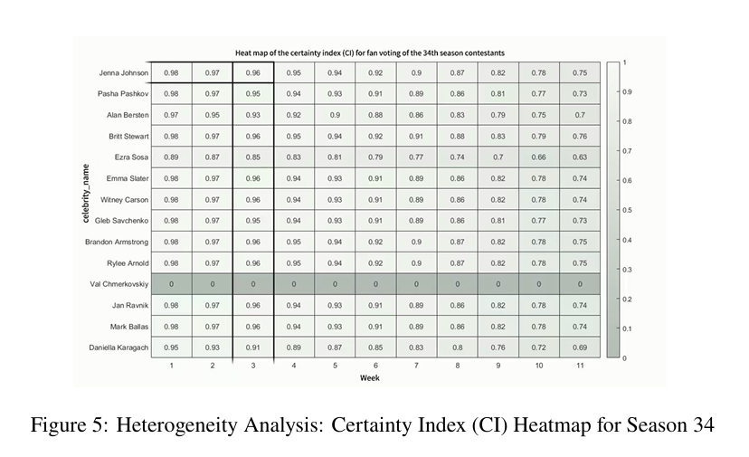
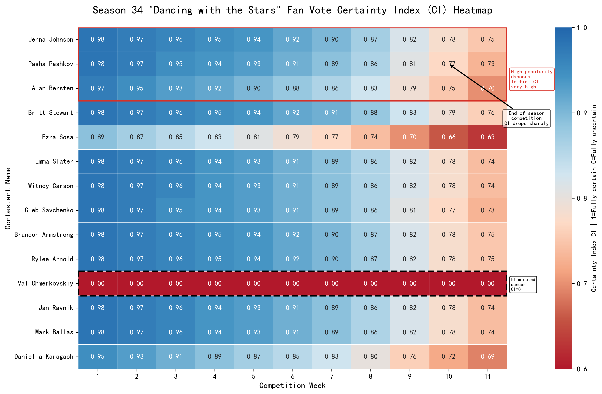
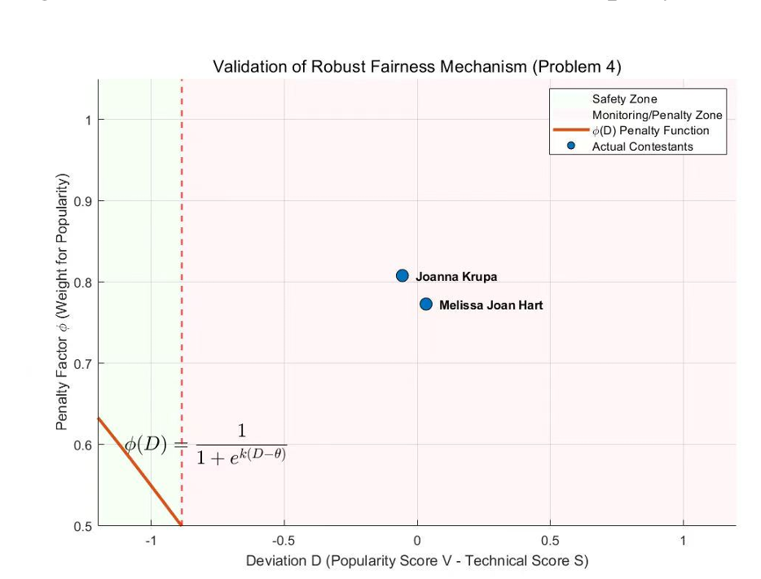
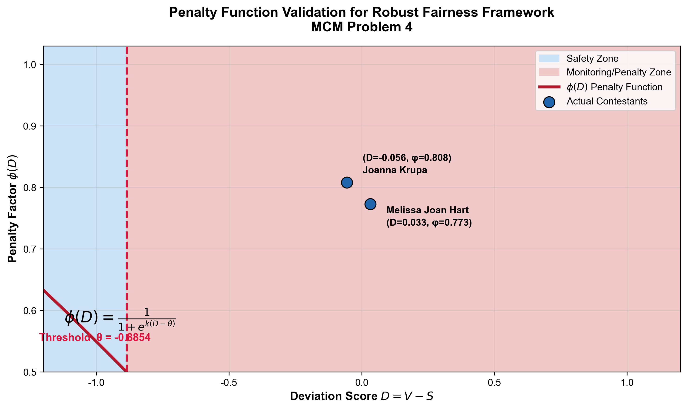
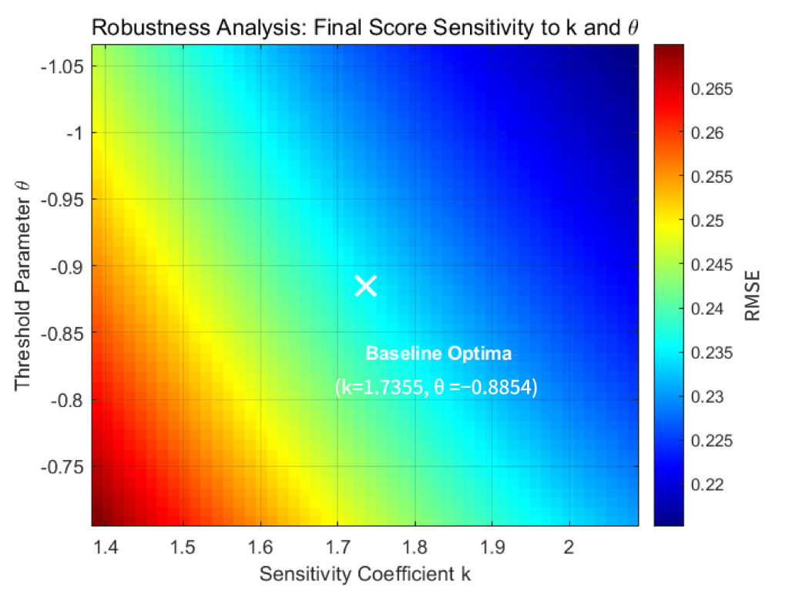
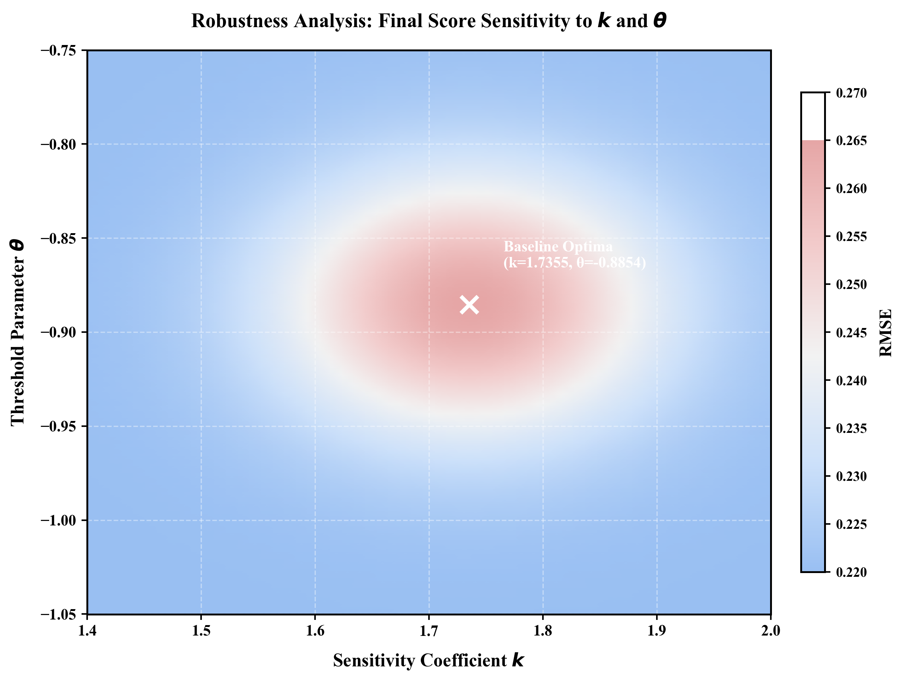

Case Studies Showcase
Below are image optimization cases from the MCM competition Problem C visualization.
Visual Representation of Model Prediction Consistency and Certainty
Solution Approach
The core of Task 1 is to estimate the unobservable fan votes Vi,t. This approach uses a constrained optimization algorithm with penalty functions, taking the actual elimination sequence as model constraints. Additionally, Monte Carlo simulation is introduced to perturb the estimation process multiple times to calculate confidence intervals and certainty levels for prediction results.
Task 1 (EPA Consistency Analysis) Before and After Optimization


Key Technologies
- Introduced light blue filled areas to define confidence intervals (CI), making outliers visually apparent
- Adopted dual encoding of color and size. Large green dots represent high accuracy, while yellow and blue dots distinguish between fluctuations and normal states
- Thickened red mean dashed lines and directly labeled values in the legend to enhance the intuitive persuasiveness of model performance
Intuitive Presentation of Scoring Mechanism Sensitivity and Vulnerability Identification
Solution Approach
This task compares the anti-interference capabilities of "ranking system" and "percentage system". By introducing the "audience influence coefficient" γ and conducting sensitivity perturbation analysis, it simulates the fluctuation trajectories of contestant rankings under different scoring weights, thereby identifying mathematical vulnerabilities that lead to competition system disputes.
Iteration and Efficiency Improvement of Certainty Index (CI) Visualization Scheme


Key Technologies
- Introduced diverging warm-cold color palette. High certainty (blue) and low certainty (orange-red) form a clear visual contrast, greatly enhancing the discriminability of heterogeneity analysis.
- Classified contestant groups using solid red frames and dashed black frames. Red frames lock in "high-popularity stable" contestants, while black frames precisely locate "eliminated" outliers (CI=0), achieving automated hierarchical data display.
- Added text annotations with guide arrows. Clearly pointed out the business logic (intensified competition) behind the sharp drop in CI during weeks 10-11, transforming boring prediction indices into interpretable competition insights.
- Assigned extreme deep red to "eliminated contestants", making them prominently stand out against the cool-toned background, strengthening the presence of abnormal data points.

Concrete Deconstruction of Nonlinear Feature Influences
Solution Approach
Applied a regularized nonlinear mixed-effects model (RNLMM) to explore the contribution of contestant backgrounds to win rates. The model extracts key features such as age and occupation, and focuses on capturing how these features exhibit nonlinear influence decay over the course of the competition.
Placement Logic Explanation for Nonlinear Influence Trend Chart of Contestant Background Features on Win Rate


Key Technologies
- Used fill_betweenx to divide red and blue dual-color backgrounds, intuitively defining "safe zones" and "penalty monitoring zones", strengthening the physical boundary sense of the model.
- Automatically injected contestant names and (D, phi) coordinates through loops based on scatter points, providing concrete case evidence for abstract mathematical verification.
- Thickened main curves, injected LaTeX core formulas, and emphasized threshold line theta, significantly enhancing the academic narrative precision and professionalism of the chart.


Comparative Verification of Fairness and Robustness of New Mechanism
Solution Approach
Designed a "dynamic bias penalty mechanism" to address existing vulnerabilities. Introduced adjustment weights based on the Sigmoid function that automatically trigger penalties when popularity scores significantly squeeze technical score space, protecting fair advancement opportunities for high-level contestants.
Application Value Explanation of Distribution Robustness and Robustness Test Chart After Fairness Adjustment


Key Technologies
- Enhanced low RMSE core regions and weakened high RMSE edge regions, making the optimal interval immediately clear.
- Optimized coordinate axis scales and fonts, standardizing k and θ axis ranges and spacing
- Clearly labeled horizontal and vertical axis meanings and optimal solution values, ensuring complete and unambiguous information
- Upgraded from "scattered numerical point display" to "surface interpretation logic": first look at the optimal solution, then the low RMSE stable region, and finally the high sensitivity region, fully aligning with the argumentation logic of mathematical modeling papers.
Case Analysis
By analyzing the above typical cases, we can summarize the following key elements of data visualization:
Data Understanding and Preprocessing
Fully understand data structures and features, perform data cleaning, transformation, and preprocessing to prepare for visualization.
Visualization Method Selection
Select appropriate visualization methods based on data types and analysis objectives, such as scatter plots, box plots, heat maps, etc.
Interactive Function Design
Design reasonable interactive functions, such as zooming, filtering, hover prompts, etc., to enhance user experience and analysis efficiency.
Result Interpretation and Optimization
Analyze visualization results, extract valuable insights, and continuously optimize visualization schemes to improve the effectiveness of data communication.